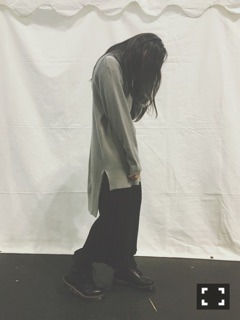

| 2016/02 28 Sun | こつこつ。699回目 |
京都握手会2days！

13thラストでした！
ミニライブ盛り上がったー
握手会はまあやとペア。
あほ面白い、楽しかった、、
ほんとに楽しかったです。
来てくださったみなさん
ありがとうございました！

keisuke yoneda
個握は1日これでした、らくちん
生誕祭ありがとうございました！
毎年毎年すごいなあ装飾。
ケーキ、メッセージ、プレゼント、、
お花もありがとう！
机の上がMdN連載ページで
埋まってて笑ったー
心から楽しそうな写真ばっかり！
スピーチの際、
優しさの一体感が素敵でした！
さゆから手紙！ありがとう。
寧々からの手紙は日芽香が
読んでくれました。サプラーイズ
寧々ちゃーん！うおおあ
生誕Tシャツ、
ほとんどの方が着てくれて嬉しかったよ！
あの、ナイフ×まりっか'17のイラスト
公式マークにしようかなあ∠( 'ω')／
イラストのふちだけ失敗だったー悔しい
いろんなところで使ってみよ∠( 'ω')／

装飾の額縁すきでした。
◆三越伊勢丹イベント
「おけいこ女子会 With 乃木坂46」
3月2日18時〜新宿、新潟にて開催。
新潟担当は桜井、万理華です！
詳細は公式サイトを見てね(^o^)/
そのまま突き進んでほしい
ということばは、何より励みになります。
これから先も、私はこのことばに
何度も救われるんだろうな、と思います。
はたちがんばるう！
まりか
コメント(497)
2016/02/28 23:48